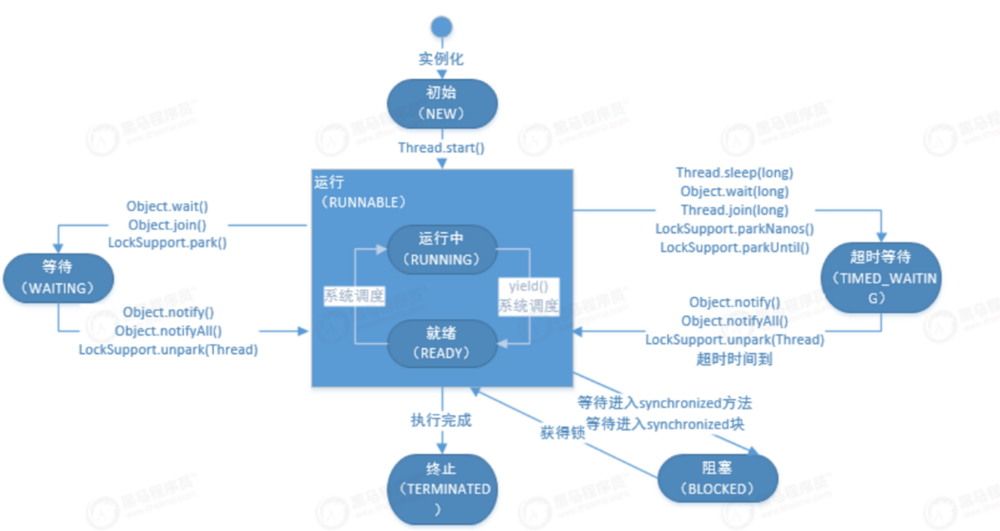

好久没写东西了，这段时间一直在忙，是真的忙，魔幻的2020总还是过去了，希望新的一年能有好运，之前一直想写一篇2020年的总结，但还是由于各种原因脱了下去（主要还是懒）。这次想刨个新坑，总结下java并发编程相关知识，总的来说这块知识是我觉得java基础里面最难的部分了，回想自己也努力的看过几次，从最早的一脸懵逼到后面的半脸懵逼，每次看这块都能有新的收货。希望能在这系列坑里能对java并发编程中的知识点有个完整点的总结，下面就开始这次的主题。
前言
在谈java并发编程时避免不了的会遇到一些术语，首先我们先将后面会提及到的术语进行一个总结
进程和线程
进程：
进程是具有一定独立功能的程序关于某个数据集合上的一次运行活动,进程是系统进行资源分配和调度的一个独立单位.
线程：
线程是进程的组成部分，一个进程可以拥有多个线程，而一个线程必须拥有一个父进程。线程可以拥有自己的堆栈，自己的程序计数器和自己的局部变量，但不能拥有系统资源。它与父进程的其他线程共享该进程的所有资源。
总的来说进程就是操作系统分配资源的最小单元，而线程是共享进程所分配的资源，一个进程中可用有一个或者多个线程，换句话说就是线程是包含在进程中的
并行和并发
- 并发：单核的CPU上执行多线程任务（多个任务），通过CPU的快速切换，实现轮流执行，由于切换很快，给用户的感觉是同时发生
- 并行：多核CPU上执行多线程任务，是真正的同一时刻同时运行多个任务
JAVA 多线程的基本使用
使用多线程的目的就是为了加速处理计算任务，如需要发送10封邮件，可以一封一封的串行化发送，也可以开启10个线程，每个线程发送一封。这个例子中我想说明的是多线程是和任务挂钩的，线程是用来执行任务的。
创建线程的方式
创建线程的方式有几种这个也是面试过程中常遇到的问题，总的来说，创建线程的方式分为以下3中：
- 继承Thread类（线程和任务绑定在一起了）
- 实现Runnable接口（线程和任务分离）
- 实现Callable接口（线程和任务分离）
1 | 4j |
线程的状态
java中定义了线程有一下六种状态（参考java.lang.Thread.State）也可以说是线程的生命周期：
- new
- runnable
- blocked
- waiting
- timed-waiting
- Terminated
new：指的是线程刚创建还没有调用start方法如new Thread(task);
runnable：调用了start()方法的线程，可能正在处于运行状态也可能是在等待系统资源如cpu的执行时间片
blocked: 处于blocked状态的线程指的是在等待锁资源的线程
Waiting:waiting指的是调用了Object.wait(),Thread.join(),LockSupport.park()方法的线程，处于等待状态状态的线程是在等待其他线程的执行完一个明确的动作后在执行。例如：调用Object.wait()方法的线程就是在等待其他线程调用Object.notify()或者Object.notifyAll()来唤醒，调用了Thread.join()的线程就是在等待join的线程执行完毕。
Timed-waiting: 线程调用了一下方法就会进入timed-waiting状态Thread.sleep,Object.wait(long),Thread.join(long),LockSupport.parkNanos(long),LockSupport.parkUntil(long)
Terminated:线程执行完毕或者异常退出
线程状态流转图如下：

守护线程
守护线程指的是通过调用Thread.setDaemon()的线程，jvm虚拟机所有的线程都是守护线程的情况下就会退出，守护线程常用于非业务的辅助功能，如gc线程就是守护线程。
线程的优先级
在java中线程的优先级从1排到10，优先级越高的线程在cpu繁忙时就越有可能会调度，通过调用Thread.setPriority(int)来配置，默认的线程优先级为5
线程的礼让-yeild
yeild指的是当前执行的线程放弃执行权，进入runnable状态，进行执行权的争夺，并不是说完全放弃执行，而是放弃真正执行的状态，转为runnable状态，可能下次还是当前线程拿到执行权
线程的阻塞
线程的阻塞可以分为好多种，从操作系统层面和java层面阻塞的定义可能不同，但是广义上使得线程阻塞的方式有下面几种
- BIO阻塞，即使用了阻塞式的io流
- sleep(long time) 让线程休眠进入阻塞状态
- a.join() 调用该方法的线程进入阻塞，等待a线程执行完恢复运行
- sychronized或ReentrantLock 造成线程未获得锁进入阻塞状态
- 获得锁之后调用wait()方法 也会让线程进入阻塞状态
- LockSupport.park() 让线程进入阻塞状态
线程睡眠-sleep
线程的睡眠可以让运行中的线程进入睡眠状态，进入睡眠状态的线程会释放cpu的执行权，但是如果线程持有锁资源，sleep不会释放锁资源，调用线程的sleep方法会抛出InterruptedException异常，这个异常的抛出通常是由于其他线程调用了该线程的interrupt方法。
这里要总结一下，Thread类中共有一下三个public的中断方法：
| 方法名 | 类型 | 作用 |
|---|---|---|
| interrupt | 成员方法 | 向方法所属线程发送中断通知 |
| interrupted | 静态方法 | 判断当前线程是否收到中断通知，如果收到返回true，并清除中断标志位 |
| isInterrupted | 成员方法 | 判断当前线程是否收到中断通知，如果收到返回true，不清除中断标志位 |
以下是一个简单的中断的例子
1 | public class ThreadSleep { |
Join
join是指调用该方法的线程进入阻塞状态，等待某线程执行完成后恢复运行。如有两个线程，线程A需要等待线程B执行完毕，则可以在线程A中调用B的join方法，这个时候线程A就会等待B执行完毕后才开始执行。